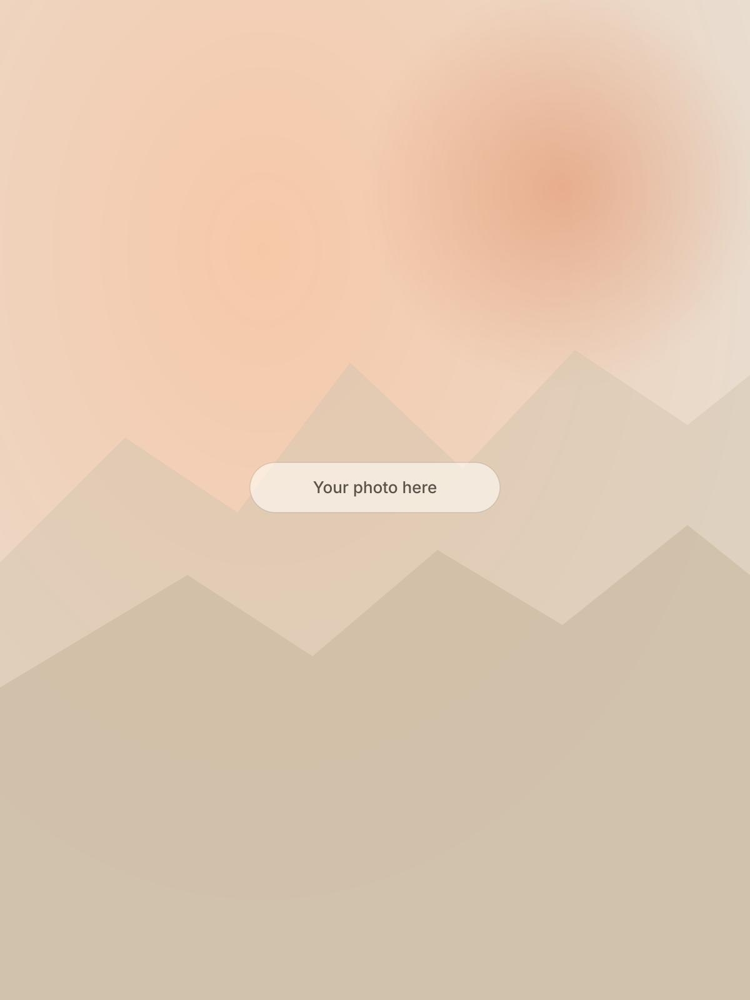
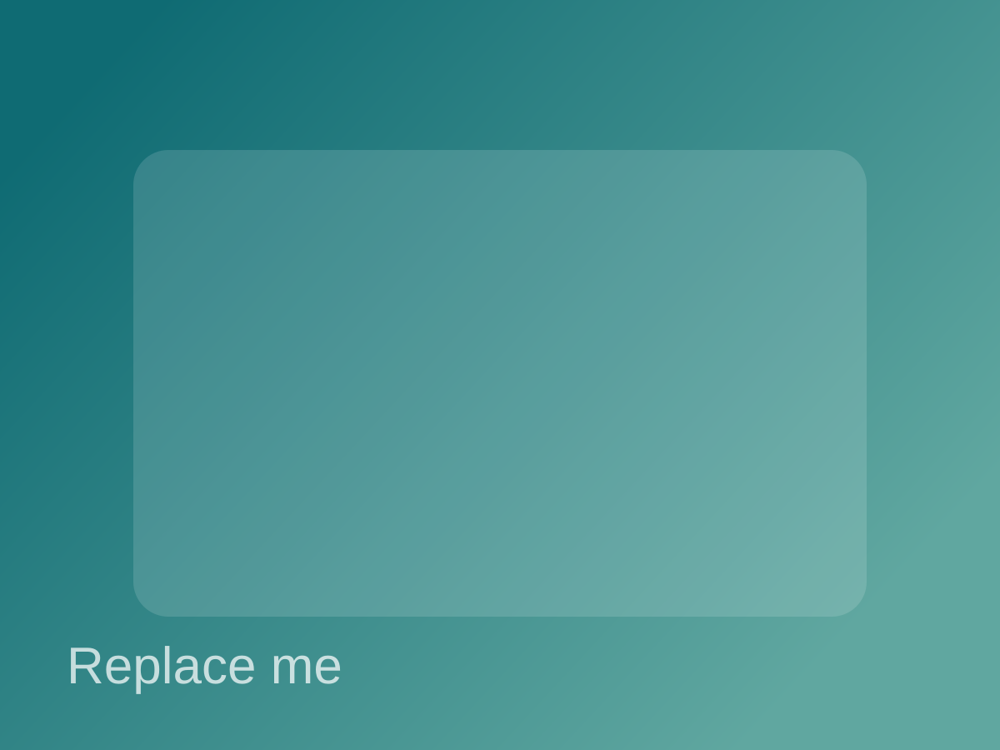
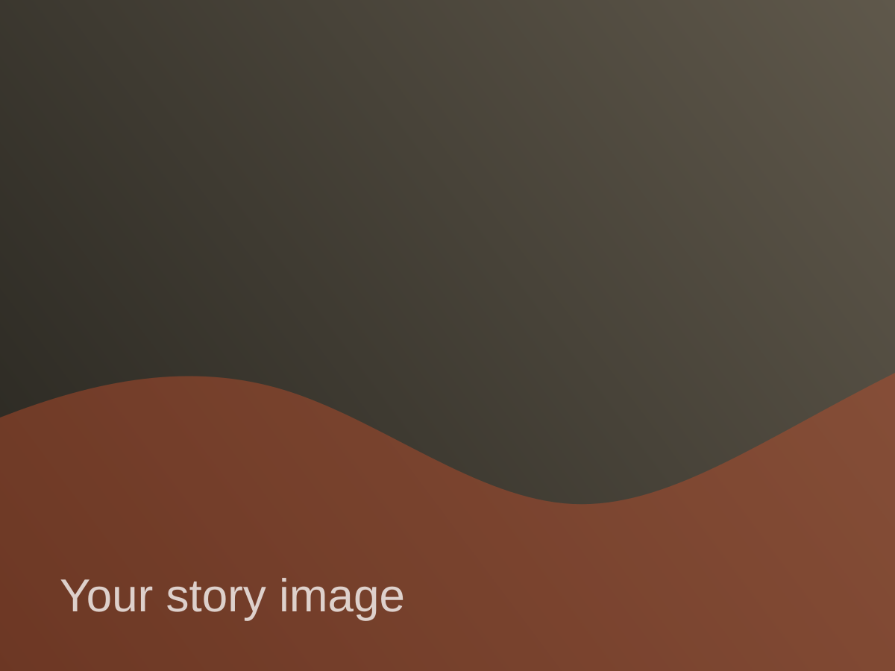

Who I am
I’m a technical project manager who values high standards, collaborative culture, and pragmatic decision-making.
Personal site
Technical Project Manager at the WNBA building systems, experiences, and teams that move fast and execute cleanly.
About me
I thrive at the intersection of product, operations, and technology. My focus is turning ambitious ideas into shipped outcomes with clear timelines, strong communication, and measurable impact.
I’m a technical project manager who values high standards, collaborative culture, and pragmatic decision-making.
I align cross-functional teams, remove blockers, and drive projects from kickoff to launch while keeping quality high.
I believe the best teams move with clarity. I prioritize transparent planning, accountability, and momentum.
Professional focus
Leading technical initiatives from planning through launch with predictable execution and clear stakeholder updates.
Connecting engineering, business, and operations so teams make faster decisions with fewer surprises.
Designing workflows and project rituals that reduce friction and help teams deliver meaningful work consistently.
Outside of work
I enjoy how sports blend strategy, teamwork, and storytelling at scale.
I like exploring systems and workflows that make teams sharper and more effective.
I focus on getting better every season by refining craft, communication, and leadership.
Photo gallery
Replace these starter images with your own in
/Users/jack/Coding/Website/assets/photos/.



Let’s connect
Use your preferred channel below and I’ll respond as soon as possible.